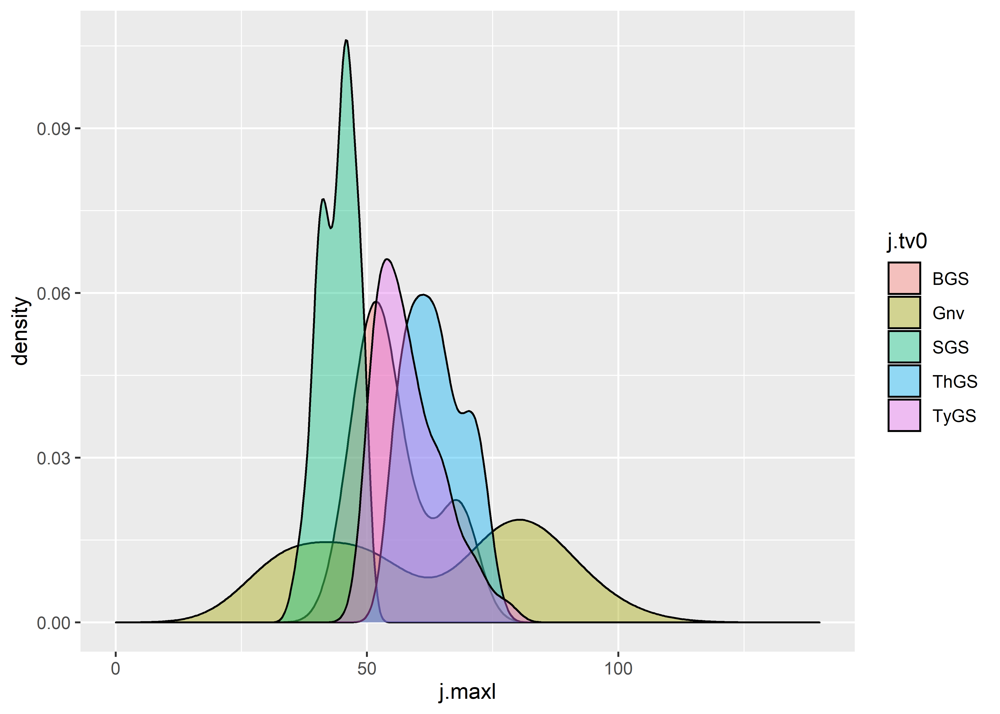
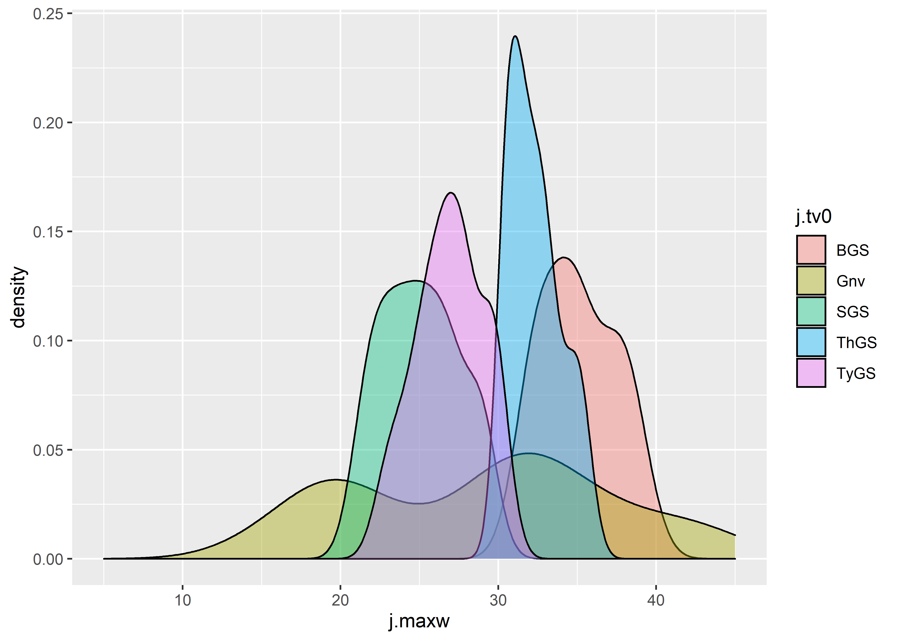
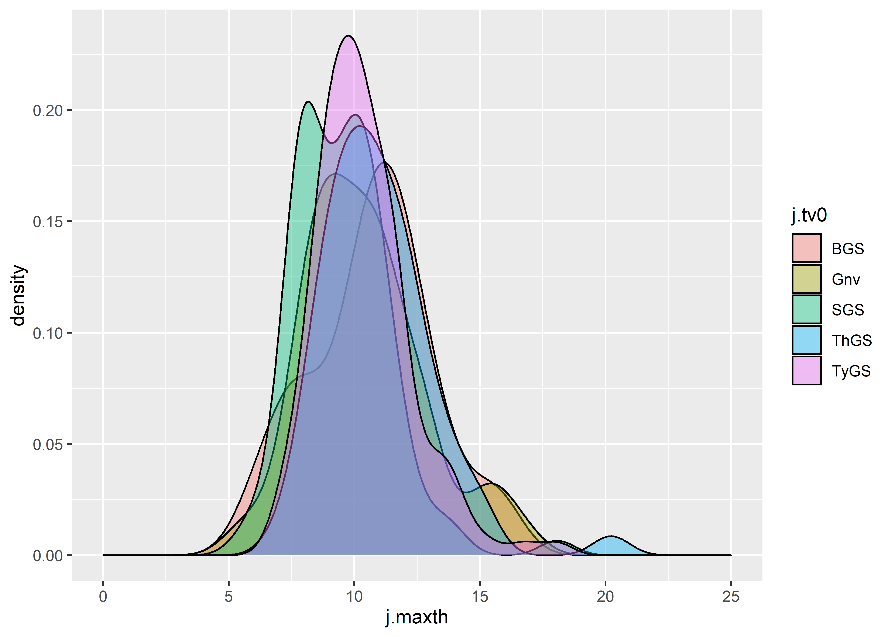

Chapter 4 Jaketown type-varieties
4.1 Reconstructing Gary type-varieties
Reconstructing and expanding the type-varieties of Gary dart points proposed at Poverty Point, Cooper, and Means was necessary, as the type-variety assignments for each specimen were not reported or preserved on the associated paperwork when the collections were curated. Additionally, the collection of Gary dart points at Poverty Point has continued to grow, and this method provides a replicable means of assigning each new specimen to the previously-established type-varieties.
Data for Gary dart points from the Jaketown site have not yet been collected, and in the interim are substituted with those data from the Poverty Point site, which is closer in proximity than the Cooper and Means sites.
# install required analysis packages
#devtools::install_github("tidyverse/tidyverse")
#devtools::install_github("mlcollyer/RRPP")
#devtools::install_github("kassambara/ggpubr")
#devtools::install_github('sinhrks/ggfortify')
# load libraries
library(tidyverse)
library(dplyr)
library(RRPP)
library(ggpubr)
library(ggfortify)
library(cluster)4.1.1 Set wd, and load data
4.2 Gary varieties proposed by Ford, Phillips, and Haag (1955)
The tv0 argument used within this section articulates with five variants of the Gary type—including Gary Stemmed, Typical Gary Stemmed, Broad Gary Stemmed, Thin Gary Stemmed, and Small Gary Stemmed—which were assigned using those morphological criteria advanced by Ford, Phillips, and Haag (1955) at the Jaketown site in west central Mississippi. The Long Gary Stemmed type was omitted from consideration due to the absence of reported metrics.
# Ford, Phillips, and Haag (1955)
fphl<-data.frame(Name=c('var.GaryStemmed','var.TypicalGaryStemmed','var.BroadGaryStemmed','var.ThinGaryStemmed','var.SmallGaryStemmed'),
Length=c(45,45,45,55,35), # in mm
end=c(70,79,70,75,50) # in mm
)
fphlength<-ggplot(fphl,aes(x=Length,xend=end,y=Name,yend=Name,color=Name)) +
geom_segment(size=2) +
scale_color_brewer(palette = "Set1") +
theme(legend.position = "none")
fphw<-data.frame(Name=c('var.GaryStemmed','var.TypicalGaryStemmed','var.BroadGaryStemmed','var.ThinGaryStemmed','var.SmallGaryStemmed'),
Width=c(22,22,32,30,20), # in mm
end=c(31,31,48,36,30) # in mm
)
fphwidth<-ggplot(fphw,aes(x=Width,xend=end,y=Name,yend=Name,color=Name)) +
geom_segment(size=2) +
scale_color_brewer(palette = "Set1") +
theme(legend.position = "none")
# render figure
fphfig<-ggarrange(fphlength,fphwidth,
labels = c("a","b"),
ncol = 1, nrow = 2)
fphfig
Figure 4.1: Gantt charts illustrating the range of linear measurements for each type-variety reported by Ford, Phillips, and Haag (1955).
4.3 Assign Gary type-varieties proposed by Ford, Phillips, and Haag (1955)
Ford, Phillips, and Haag (1955) used a series of metrics to assign Gary varieties at the Jaketown site. The approach empoyed here enlists the full range of reported metrics, and applies those to each of the points. Any points that do not articulate with one of the three criteria were assigned as Gary no variety (Gnv), and, for the purpose of this undertaking, are considered to be Gary dart points with no type-variety assignment. Due to the degree of overlap in the ranges associated with the Gary type-varieties advanced by Ford, Phillips, and Haag (1956), it is expected that Gary Stemmed will fall out due to overlap in length with Broad Gary Stemmed, and overlap in width with Typical Gary Stemmed.
4.3.1 Subset the sample
During code development, the Poverty Point sample was used in place of the Jaketown sample as the requisite permissions and access were sought to access and scan those collections. Due to the COVID-19 pandemic, we were unable to collect data from the Jaketown sample; however, since those type-varieties presented at Poverty Point are representative of the logical maturation of these type-varieties, the Poverty Point specimens were classified using those metrics associated with the Gary dart point type-varieties that were advanced at Jaketown.
# subset poverty point data
jmx<-subset(data,Site=="Pov Pt",select=maxl:maxstw)
# assign varieties based upon reported metrics in Ford, Phillips, and Haag [1954]
fphlcheck1 <- jmx$maxl >= 45 & jmx$maxl <= 70
fphlcheck2 <- jmx$maxl >= 45 & jmx$maxl <= 79
fphlcheck3 <- jmx$maxl >= 45 & jmx$maxl <= 70
fphlcheck4 <- jmx$maxl >= 55 & jmx$maxl <= 75
fphlcheck5 <- jmx$maxl >= 35 & jmx$maxl <= 50
fphwcheck1 <- jmx$maxw >= 22 & jmx$maxw <= 31
fphwcheck2 <- jmx$maxw >= 22 & jmx$maxw <= 31
fphwcheck3 <- jmx$maxw >= 32 & jmx$maxw <= 48
fphwcheck4 <- jmx$maxw >= 30 & jmx$maxw <= 36
fphwcheck5 <- jmx$maxw >= 20 & jmx$maxw <= 30
jmx$tv0 <- "Gnv" # = Gary points (no variety)
jmx$tv0 <- ifelse(fphlcheck1 & fphwcheck1, "GS", jmx$tv0)
jmx$tv0 <- ifelse(fphlcheck2 & fphwcheck2, "TyGS", jmx$tv0)
jmx$tv0 <- ifelse(fphlcheck3 & fphwcheck3, "BGS", jmx$tv0)
jmx$tv0 <- ifelse(fphlcheck4 & fphwcheck4, "ThGS", jmx$tv0)
jmx$tv0 <- ifelse(fphlcheck5 & fphwcheck5, "SGS", jmx$tv0)
tv0<-jmx$tv0
tv0## [1] "Gnv" "TyGS" "ThGS" "ThGS" "TyGS" "Gnv" "TyGS" "ThGS" "TyGS" "ThGS" "ThGS" "ThGS" "ThGS" "ThGS" "ThGS" "TyGS" "TyGS" "TyGS" "ThGS" "TyGS" "TyGS"
## [22] "TyGS" "TyGS" "ThGS" "TyGS" "TyGS" "ThGS" "TyGS" "TyGS" "TyGS" "ThGS" "TyGS" "TyGS" "TyGS" "BGS" "TyGS" "TyGS" "TyGS" "TyGS" "TyGS" "TyGS" "TyGS"
## [43] "TyGS" "SGS" "SGS" "SGS" "BGS" "SGS" "Gnv" "SGS" "SGS" "SGS" "BGS" "SGS" "Gnv" "SGS" "SGS" "SGS" "Gnv" "SGS" "SGS" "SGS" "SGS"
## [64] "SGS" "Gnv" "BGS" "TyGS" "ThGS" "Gnv" "Gnv" "TyGS" "SGS" "Gnv" "SGS" "Gnv" "TyGS" "Gnv" "ThGS" "TyGS" "ThGS" "ThGS" "TyGS" "Gnv" "TyGS"
## [85] "SGS" "TyGS" "Gnv" "ThGS" "ThGS" "ThGS" "TyGS" "TyGS" "TyGS" "SGS" "ThGS" "SGS" "TyGS" "ThGS" "SGS" "ThGS" "TyGS" "ThGS" "ThGS" "SGS" "TyGS"
## [106] "TyGS" "TyGS" "TyGS" "SGS" "TyGS" "Gnv" "SGS" "TyGS" "SGS" "SGS" "SGS" "Gnv" "ThGS" "TyGS" "BGS" "Gnv" "Gnv" "ThGS" "ThGS" "TyGS" "TyGS"
## [127] "BGS" "Gnv" "SGS" "TyGS" "TyGS" "SGS" "TyGS" "SGS" "SGS" "Gnv" "Gnv" "SGS" "TyGS" "Gnv" "BGS" "TyGS" "Gnv" "Gnv" "SGS" "SGS" "SGS"
## [148] "Gnv" "TyGS" "TyGS" "TyGS" "Gnv" "SGS" "SGS" "SGS" "SGS" "Gnv" "SGS" "SGS" "TyGS" "TyGS" "Gnv" "Gnv" "Gnv" "TyGS" "SGS" "Gnv" "Gnv"
## [169] "ThGS" "TyGS" "TyGS" "SGS" "SGS" "TyGS" "TyGS" "ThGS" "SGS" "TyGS" "TyGS" "SGS" "TyGS" "SGS" "TyGS" "SGS" "Gnv" "Gnv" "TyGS" "SGS" "TyGS"
## [190] "SGS" "Gnv" "Gnv" "BGS" "ThGS" "ThGS" "TyGS" "ThGS" "TyGS" "ThGS" "TyGS" "ThGS" "Gnv" "BGS" "TyGS" "TyGS" "Gnv" "SGS" "TyGS" "SGS"4.4 Boxplots for site by Ford, Phillips, and Haag’s (1955) Gary type-varieties
# boxplot of maximum length
jmaxl<-ggplot(jmx,aes(x=tv0,y=maxl,color=tv0)) +
geom_boxplot() +
geom_dotplot(binaxis = 'y',stackdir = 'center',dotsize = 0.3) +
scale_color_brewer(palette = "Set1") +
theme(legend.position = "none")
# boxplot of maximum width
jmaxw<-ggplot(jmx,aes(x=tv0,y=maxw,color=tv0)) +
geom_boxplot() +
geom_dotplot(binaxis = 'y',stackdir = 'center',dotsize = 0.3)+
scale_color_brewer(palette = "Set1") +
theme(legend.position = "none")
# boxplot of maximum thickness
jmaxth<-ggplot(jmx,aes(x=tv0,y=maxth,color=tv0)) +
geom_boxplot() +
geom_dotplot(binaxis = 'y',stackdir = 'center',dotsize = 0.3)+
scale_color_brewer(palette = "Set1") +
theme(legend.position = "none")
# boxplot of maximum stem length
jmaxstl<-ggplot(jmx,aes(x=tv0,y=maxstl,color=tv0)) +
geom_boxplot() +
geom_dotplot(binaxis = 'y',stackdir = 'center',dotsize = 0.3)+
scale_color_brewer(palette = "Set1") +
theme(legend.position = "none")
# boxplot of maximum thickness
jmaxstw<-ggplot(jmx,aes(x=tv0,y=maxstw,color=tv0)) +
geom_boxplot() +
geom_dotplot(binaxis = 'y',stackdir = 'center',dotsize = 0.3)+
scale_color_brewer(palette = "Set1") +
theme(legend.position = "none")
# render figure
jfigure<-ggarrange(jmaxl,jmaxw,jmaxth,jmaxstl,jmaxstw,
labels = c("a","b","c","d","e"),
ncol = 3, nrow = 2)## `stat_bindot()` using `bins = 30`. Pick better value with `binwidth`.
## `stat_bindot()` using `bins = 30`. Pick better value with `binwidth`.
## `stat_bindot()` using `bins = 30`. Pick better value with `binwidth`.
## `stat_bindot()` using `bins = 30`. Pick better value with `binwidth`.
## `stat_bindot()` using `bins = 30`. Pick better value with `binwidth`.Figure 4.2: Boxplots for maximum a, length; b, width; c, thickness; d, stem length; and e, stem width for Gary dart points assigned to the Ford, Phillips, and Haag type-varieties.
4.5 Density plots for variables by type-varieties
4.5.1 Density plot for maximum length by tv0
# define variables in jaketown subset
j.maxl<-jmx$maxl
j.maxw<-jmx$maxw
j.maxth<-jmx$maxth
j.maxstl<-jmx$maxstl
j.maxstw<-jmx$maxstw
j.tv0<-jmx$tv0
# density plot of maxl by tv0
ggplot(jmx, aes(x=j.maxl, fill = j.tv0)) +
geom_density(alpha = .4) +
scale_color_brewer(palette = "Set1") +
xlim(0,140) #full range of variation included in the linear measurements associated with type-varieties
4.5.2 Density plot for maximum width by tv0
# density plot of maxw by tv0
ggplot(jmx, aes(x=j.maxw, fill = j.tv0)) +
geom_density(alpha = .4) +
scale_color_brewer(palette = "Set1") +
xlim(5,45)
4.5.3 Density plot for maximum thickness by tv0
# density plot of maxth by tv0
ggplot(jmx, aes(x=j.maxth, fill = j.tv0)) +
geom_density(alpha = .4) +
scale_color_brewer(palette = "Set1") +
xlim(0,25)
4.5.4 Density plot for maximum stem length by tv0
# density plot of maxstl by tv0
ggplot(jmx, aes(x=j.maxstl, fill = j.tv0)) +
geom_density(alpha = .4) +
scale_color_brewer(palette = "Set1") +
xlim(0,35)
4.5.5 Density plot for maximum stem width by tv0
# density plot of maxstw by tv0
ggplot(jmx, aes(x=j.maxstw, fill = j.tv0)) +
geom_density(alpha = .4) +
scale_color_brewer(palette = "Set1") +
xlim(0,45)
4.6 Principal Components Analysis for Ford, Phillips, and Haag’s (1955) type-varieties at all sites
#pca
df<-jmx[c(1:5)]
tv0pca<-autoplot(prcomp(df),data = jmx, colour = 'tv0',
loadings = TRUE, loadings.colour = 'blue',
loadings.label = TRUE,loadings.label.size = 3,
frame = TRUE)
#render figure
tv0pcaFigure 4.3: PCA by Gary type-varieties reported by Ford, Phillips, and Haag (1955).
4.7 Analyses of Variance (ANOVA) for linear variables ~ type-varieties
4.7.1 Maximum length ~ type-variety
# anova = maximum length ~ tv1
t0ml<-lm.rrpp(j.maxl ~ j.tv0, SS.type = "I",data = jmx,iter = 9999,print.progress = FALSE)
anova(t0ml)##
## Analysis of Variance, using Residual Randomization
## Permutation procedure: Randomization of null model residuals
## Number of permutations: 10000
## Estimation method: Ordinary Least Squares
## Sums of Squares and Cross-products: Type I
## Effect sizes (Z) based on F distributions
##
## Df SS MS Rsq F Z Pr(>F)
## j.tv0 4 10525 2631.35 0.35599 28.191 4.4345 1e-04 ***
## Residuals 204 19041 93.34 0.64401
## Total 208 29567
## ---
## Signif. codes: 0 '***' 0.001 '**' 0.01 '*' 0.05 '.' 0.1 ' ' 1
##
## Call: lm.rrpp(f1 = j.maxl ~ j.tv0, iter = 9999, SS.type = "I", data = jmx, print.progress = FALSE)# visualise model predictions for maximum length ~ type-variety
j.tvDF<-data.frame(j.tv0 = c("GS","TyGS","BGS","ThGS","SGS"))
rownames(j.tvDF)<-c("GS","TyGS","BGS","ThGS","SGS")
jPreds<-predict(t0ml,j.tvDF)
jPreds##
## Linear Model fit with lm.rrpp
##
## Number of predictions: 5
## Confidence level: 95 %
## Number of bootstrap permutations: 10000
##
## Predicted values:
##
## [,1]
## GS 54.88902
## TyGS 65.35123
## BGS 54.88902
## ThGS 44.74142
## SGS 53.50173
##
##
## 95 % Lower confidence limits:
##
## [,1]
## GS 50.02558
## TyGS 62.06585
## BGS 50.02558
## ThGS 41.98063
## SGS 50.30675
##
##
## 95 % Upper confidence limits:
##
## [,1]
## GS 60.45675
## TyGS 68.75660
## BGS 60.45675
## ThGS 47.58569
## SGS 56.88942
# pairwise comparison of LS means = which sites differ?
j.ml<-pairwise(t0ml, groups = jmx$tv0)
summary(j.ml, confidence = 0.95, test.type = "dist")##
## Pairwise comparisons
##
## Groups: BGS Gnv SGS ThGS TyGS
##
## RRPP: 10000 permutations
##
## LS means:
## Vectors hidden (use show.vectors = TRUE to view)
##
## Pairwise distances between means, plus statistics
## d UCL (95%) Z Pr > d
## BGS:Gnv 1.365676 8.652324 -0.834165 0.7664
## BGS:SGS 10.116604 8.508551 2.511298 0.0203
## BGS:ThGS 10.487714 8.859616 2.531857 0.0190
## BGS:TyGS 4.024400 8.320513 0.238170 0.3507
## Gnv:SGS 8.750928 4.999773 4.346951 0.0005
## Gnv:ThGS 11.853390 5.472166 5.716631 0.0001
## Gnv:TyGS 5.390076 4.686218 2.396012 0.0233
## SGS:ThGS 20.604318 5.096326 11.669992 0.0001
## SGS:TyGS 14.141004 4.147434 9.720570 0.0001
## ThGS:TyGS 6.463314 4.749783 3.062728 0.0080# pairwise distances between variances = standardization?
summary(j.ml, confidence = 0.95, test.type = "var")##
## Pairwise comparisons
##
## Groups: BGS Gnv SGS ThGS TyGS
##
## RRPP: 10000 permutations
##
##
## Observed variances by group
##
## BGS Gnv SGS ThGS TyGS
## 67.03780 375.72606 12.92472 32.59814 36.13403
##
## Pairwise distances between variances, plus statistics
## d UCL (95%) Z Pr > d
## BGS:Gnv 308.688257 148.31147 5.26086983 0.0014
## BGS:SGS 54.113083 143.80909 -0.06765679 0.4488
## BGS:ThGS 34.439657 148.26620 -0.50746817 0.6322
## BGS:TyGS 30.903773 140.32793 -0.55992416 0.6771
## Gnv:SGS 362.801340 85.98306 12.42506060 0.0001
## Gnv:ThGS 343.127914 94.44745 10.43352695 0.0001
## Gnv:TyGS 339.592030 78.42876 12.52141375 0.0001
## SGS:ThGS 19.673427 86.37436 -0.60869318 0.6658
## SGS:TyGS 23.209311 71.00155 -0.27130407 0.5305
## ThGS:TyGS 3.535884 80.92463 -1.20776480 0.93464.7.2 Maximum width ~ type-variety
# anova = maximum width ~ tv1
t0mw<-lm.rrpp(j.maxw ~ j.tv0, SS.type = "I",data = jmx,iter = 9999,print.progress = FALSE)
anova(t0mw)##
## Analysis of Variance, using Residual Randomization
## Permutation procedure: Randomization of null model residuals
## Number of permutations: 10000
## Estimation method: Ordinary Least Squares
## Sums of Squares and Cross-products: Type I
## Effect sizes (Z) based on F distributions
##
## Df SS MS Rsq F Z Pr(>F)
## j.tv0 4 1957.8 489.46 0.39104 32.75 4.5715 1e-04 ***
## Residuals 204 3048.9 14.95 0.60896
## Total 208 5006.7
## ---
## Signif. codes: 0 '***' 0.001 '**' 0.01 '*' 0.05 '.' 0.1 ' ' 1
##
## Call: lm.rrpp(f1 = j.maxw ~ j.tv0, iter = 9999, SS.type = "I", data = jmx, print.progress = FALSE)# visualise model predictions for maximum width ~ type-variety
j.tvDF<-data.frame(j.tv0 = c("GS","TyGS","BGS","ThGS","SGS"))
rownames(j.tvDF)<-c("GS","TyGS","BGS","ThGS","SGS")
jPreds<-predict(t0mw,j.tvDF)
jPreds##
## Linear Model fit with lm.rrpp
##
## Number of predictions: 5
## Confidence level: 95 %
## Number of bootstrap permutations: 10000
##
## Predicted values:
##
## [,1]
## GS 33.30952
## TyGS 30.97179
## BGS 33.30952
## ThGS 23.27218
## SGS 23.77630
##
##
## 95 % Lower confidence limits:
##
## [,1]
## GS 31.40286
## TyGS 29.66210
## BGS 31.40286
## ThGS 22.15396
## SGS 22.49763
##
##
## 95 % Upper confidence limits:
##
## [,1]
## GS 35.50522
## TyGS 32.33871
## BGS 35.50522
## ThGS 24.44186
## SGS 25.10563
# pairwise comparison of LS means = which sites differ?
j.mw<-pairwise(t0mw, groups = jmx$tv0)
summary(j.mw, confidence = 0.95, test.type = "dist")##
## Pairwise comparisons
##
## Groups: BGS Gnv SGS ThGS TyGS
##
## RRPP: 10000 permutations
##
## LS means:
## Vectors hidden (use show.vectors = TRUE to view)
##
## Pairwise distances between means, plus statistics
## d UCL (95%) Z Pr > d
## BGS:Gnv 9.524865 3.652254 7.1505726 0.0001
## BGS:SGS 10.022453 3.534684 7.9072524 0.0001
## BGS:ThGS 2.319429 3.659392 0.7479931 0.2123
## BGS:TyGS 8.057733 3.392538 6.2857113 0.0001
## Gnv:SGS 0.497588 2.019983 -0.5378937 0.6331
## Gnv:ThGS 7.205436 2.263382 8.9729377 0.0001
## Gnv:TyGS 1.467132 1.921838 1.1278995 0.1414
## SGS:ThGS 7.703024 2.086263 10.6117731 0.0001
## SGS:TyGS 1.964719 1.694282 2.4330429 0.0255
## ThGS:TyGS 5.738305 1.981213 8.1889199 0.0001# pairwise distances between variances = standardization?
summary(j.mw, confidence = 0.95, test.type = "var")##
## Pairwise comparisons
##
## Groups: BGS Gnv SGS ThGS TyGS
##
## RRPP: 10000 permutations
##
##
## Observed variances by group
##
## BGS Gnv SGS ThGS TyGS
## 5.653644 60.373587 4.967015 3.457543 5.065426
##
## Pairwise distances between variances, plus statistics
## d UCL (95%) Z Pr > d
## BGS:Gnv 54.71994270 27.12638 5.2800826 0.0021
## BGS:SGS 0.68662971 26.92355 -1.0106449 0.9513
## BGS:ThGS 2.19610191 27.48188 -0.8405764 0.8431
## BGS:TyGS 0.58821892 27.16807 -1.0130896 0.9590
## Gnv:SGS 55.40657241 14.32853 11.1728984 0.0001
## Gnv:ThGS 56.91604461 16.00806 10.2034748 0.0001
## Gnv:TyGS 55.30816162 13.29508 12.0630804 0.0001
## SGS:ThGS 1.50947221 14.64097 -1.0090864 0.8476
## SGS:TyGS 0.09841079 11.74992 -1.3563933 0.9887
## ThGS:TyGS 1.60788300 13.50445 -0.9652804 0.82994.7.3 Maximum thickness ~ type-variety
# anova = maximum thickness ~ tv1
t0mth<-lm.rrpp(j.maxth ~ j.tv0, SS.type = "I",data = jmx,iter = 9999,print.progress = FALSE)
anova(t0mth)##
## Analysis of Variance, using Residual Randomization
## Permutation procedure: Randomization of null model residuals
## Number of permutations: 10000
## Estimation method: Ordinary Least Squares
## Sums of Squares and Cross-products: Type I
## Effect sizes (Z) based on F distributions
##
## Df SS MS Rsq F Z Pr(>F)
## j.tv0 4 120.62 30.1542 0.13017 7.6324 2.8515 1e-04 ***
## Residuals 204 805.97 3.9508 0.86983
## Total 208 926.58
## ---
## Signif. codes: 0 '***' 0.001 '**' 0.01 '*' 0.05 '.' 0.1 ' ' 1
##
## Call: lm.rrpp(f1 = j.maxth ~ j.tv0, iter = 9999, SS.type = "I", data = jmx, print.progress = FALSE)# visualise model predictions for maximum thickness ~ type-variety
j.tvDF<-data.frame(j.tv0 = c("GS","TyGS","BGS","ThGS","SGS"))
rownames(j.tvDF)<-c("GS","TyGS","BGS","ThGS","SGS")
jPreds<-predict(t0mth,j.tvDF)
jPreds##
## Linear Model fit with lm.rrpp
##
## Number of predictions: 5
## Confidence level: 95 %
## Number of bootstrap permutations: 10000
##
## Predicted values:
##
## [,1]
## GS 11.470327
## TyGS 11.200857
## BGS 11.470327
## ThGS 9.062265
## SGS 9.740899
##
##
## 95 % Lower confidence limits:
##
## [,1]
## GS 10.465710
## TyGS 10.520367
## BGS 10.465710
## ThGS 8.503645
## SGS 9.079148
##
##
## 95 % Upper confidence limits:
##
## [,1]
## GS 12.579552
## TyGS 11.914073
## BGS 12.579552
## ThGS 9.657533
## SGS 10.427615# pairwise comparison of LS means = which sites differ?
j.mth<-pairwise(t0mth, groups = jmx$tv0)
summary(j.mth, confidence = 0.95, test.type = "dist")##
## Pairwise comparisons
##
## Groups: BGS Gnv SGS ThGS TyGS
##
## RRPP: 10000 permutations
##
## LS means:
## Vectors hidden (use show.vectors = TRUE to view)
##
## Pairwise distances between means, plus statistics
## d UCL (95%) Z Pr > d
## BGS:Gnv 1.7184985 1.5352432 2.3317797 0.0277
## BGS:SGS 2.4019916 1.4896677 3.9059055 0.0022
## BGS:ThGS 0.2598730 1.5368063 -0.7792173 0.7434
## BGS:TyGS 1.3065778 1.4584400 1.5790602 0.0776
## Gnv:SGS 0.6834931 0.8840020 1.1828025 0.1296
## Gnv:ThGS 1.4586255 0.9669602 3.5933326 0.0031
## Gnv:TyGS 0.4119207 0.8319240 0.2842597 0.3309
## SGS:ThGS 2.1421186 0.8868458 6.5032933 0.0001
## SGS:TyGS 1.0954138 0.7376981 3.4749262 0.0042
## ThGS:TyGS 1.0467048 0.8418676 2.7226166 0.0150# pairwise distances between variances = standardization?
summary(j.mth, confidence = 0.95, test.type = "var")##
## Pairwise comparisons
##
## Groups: BGS Gnv SGS ThGS TyGS
##
## RRPP: 10000 permutations
##
##
## Observed variances by group
##
## BGS Gnv SGS ThGS TyGS
## 4.660202 4.921343 2.762441 5.354242 3.308355
##
## Pairwise distances between variances, plus statistics
## d UCL (95%) Z Pr > d
## BGS:Gnv 0.2611406 6.155285 -0.92707742 0.9091
## BGS:SGS 1.8977613 6.020480 -0.05598282 0.4007
## BGS:ThGS 0.6940395 6.078922 -0.71356617 0.7686
## BGS:TyGS 1.3518470 6.072972 -0.32974149 0.5603
## Gnv:SGS 2.1589019 3.214629 0.86413100 0.1878
## Gnv:ThGS 0.4328989 3.548270 -0.91122355 0.8064
## Gnv:TyGS 1.6129876 2.960475 0.42776362 0.2911
## SGS:ThGS 2.5918008 3.179887 1.32460925 0.1123
## SGS:TyGS 0.5459143 2.612204 -0.69120661 0.6970
## ThGS:TyGS 2.0458865 3.033612 0.86617945 0.19114.7.4 Maximum stem length ~ type-variety
# anova = maximum stem length ~ tv1
t0mstl<-lm.rrpp(j.maxstl ~ j.tv0, SS.type = "I",data = jmx,iter = 9999,print.progress = FALSE)
anova(t0mstl)##
## Analysis of Variance, using Residual Randomization
## Permutation procedure: Randomization of null model residuals
## Number of permutations: 10000
## Estimation method: Ordinary Least Squares
## Sums of Squares and Cross-products: Type I
## Effect sizes (Z) based on F distributions
##
## Df SS MS Rsq F Z Pr(>F)
## j.tv0 4 154.28 38.570 0.05354 2.8852 1.6189 0.0238 *
## Residuals 204 2727.07 13.368 0.94646
## Total 208 2881.35
## ---
## Signif. codes: 0 '***' 0.001 '**' 0.01 '*' 0.05 '.' 0.1 ' ' 1
##
## Call: lm.rrpp(f1 = j.maxstl ~ j.tv0, iter = 9999, SS.type = "I", data = jmx, print.progress = FALSE)# visualise model predictions for maximum stem length ~ type-variety
j.tvDF<-data.frame(j.tv0 = c("GS","TyGS","BGS","ThGS","SGS"))
rownames(j.tvDF)<-c("GS","TyGS","BGS","ThGS","SGS")
jPreds<-predict(t0mstl,j.tvDF)
jPreds##
## Linear Model fit with lm.rrpp
##
## Number of predictions: 5
## Confidence level: 95 %
## Number of bootstrap permutations: 10000
##
## Predicted values:
##
## [,1]
## GS 16.09667
## TyGS 15.38539
## BGS 16.09667
## ThGS 13.96496
## SGS 14.54293
##
##
## 95 % Lower confidence limits:
##
## [,1]
## GS 14.18805
## TyGS 14.13239
## BGS 14.18805
## ThGS 12.89868
## SGS 13.31765
##
##
## 95 % Upper confidence limits:
##
## [,1]
## GS 18.06538
## TyGS 16.65096
## BGS 18.06538
## ThGS 15.05676
## SGS 15.78209# pairwise comparison of LS means = which sites differ?
j.mstl<-pairwise(t0mstl, groups = jmx$tv0)
summary(j.mstl, confidence = 0.95, test.type = "dist")##
## Pairwise comparisons
##
## Groups: BGS Gnv SGS ThGS TyGS
##
## RRPP: 10000 permutations
##
## LS means:
## Vectors hidden (use show.vectors = TRUE to view)
##
## Pairwise distances between means, plus statistics
## d UCL (95%) Z Pr > d
## BGS:Gnv 1.54936937 2.711968 0.55281985 0.2607
## BGS:SGS 2.12817610 2.606783 1.31832278 0.1137
## BGS:ThGS 0.70152381 2.714692 -0.49406289 0.6199
## BGS:TyGS 0.07706667 2.552953 -1.23000437 0.9490
## Gnv:SGS 0.57880673 1.565368 -0.12534924 0.4736
## Gnv:ThGS 0.84784556 1.716413 0.27390424 0.3437
## Gnv:TyGS 1.47230270 1.464996 1.97023032 0.0491
## SGS:ThGS 1.42665229 1.583803 1.60044701 0.0790
## SGS:TyGS 2.05110943 1.301227 3.82997674 0.0028
## ThGS:TyGS 0.62445714 1.492987 0.02101819 0.4192# pairwise distances between variances = standardization?
summary(j.mstl, confidence = 0.95, test.type = "var")##
## Pairwise comparisons
##
## Groups: BGS Gnv SGS ThGS TyGS
##
## RRPP: 10000 permutations
##
##
## Observed variances by group
##
## BGS Gnv SGS ThGS TyGS
## 11.283311 23.096620 10.724669 6.030945 13.219367
##
## Pairwise distances between variances, plus statistics
## d UCL (95%) Z Pr > d
## BGS:Gnv 11.8133086 12.470797 1.713570490 0.0635
## BGS:SGS 0.5586417 12.226588 -1.139729598 0.9262
## BGS:ThGS 5.2523661 12.700027 0.028572251 0.4092
## BGS:TyGS 1.9360554 11.950565 -0.778846536 0.7586
## Gnv:SGS 12.3719503 7.181220 4.225387458 0.0013
## Gnv:ThGS 17.0656747 8.020932 5.561687441 0.0001
## Gnv:TyGS 9.8772532 6.760947 3.403203321 0.0038
## SGS:ThGS 4.6937244 7.433670 0.734771213 0.2148
## SGS:TyGS 2.4946971 6.133701 0.002634716 0.4226
## ThGS:TyGS 7.1884215 7.062181 2.000758910 0.04624.7.5 Maximum stem width ~ type-variety
# anova = maximum stem width ~ tv1
t0mstw<-lm.rrpp(j.maxstw ~ j.tv0, SS.type = "I",data = jmx,iter = 9999,print.progress = FALSE)
anova(t0mstw)##
## Analysis of Variance, using Residual Randomization
## Permutation procedure: Randomization of null model residuals
## Number of permutations: 10000
## Estimation method: Ordinary Least Squares
## Sums of Squares and Cross-products: Type I
## Effect sizes (Z) based on F distributions
##
## Df SS MS Rsq F Z Pr(>F)
## j.tv0 4 308.55 77.138 0.10494 5.9792 2.5604 1e-04 ***
## Residuals 204 2631.80 12.901 0.89506
## Total 208 2940.35
## ---
## Signif. codes: 0 '***' 0.001 '**' 0.01 '*' 0.05 '.' 0.1 ' ' 1
##
## Call: lm.rrpp(f1 = j.maxstw ~ j.tv0, iter = 9999, SS.type = "I", data = jmx, print.progress = FALSE)# visualise model predictions for maximum stem width ~ type-variety
j.tvDF<-data.frame(j.tv0 = c("GS","TyGS","BGS","ThGS","SGS"))
rownames(j.tvDF)<-c("GS","TyGS","BGS","ThGS","SGS")
jPreds<-predict(t0mstw,j.tvDF)
jPreds##
## Linear Model fit with lm.rrpp
##
## Number of predictions: 5
## Confidence level: 95 %
## Number of bootstrap permutations: 10000
##
## Predicted values:
##
## [,1]
## GS 21.92990
## TyGS 21.15667
## BGS 21.92990
## ThGS 18.06158
## SGS 18.19758
##
##
## 95 % Lower confidence limits:
##
## [,1]
## GS 20.11099
## TyGS 19.90481
## BGS 20.11099
## ThGS 16.99836
## SGS 17.02399
##
##
## 95 % Upper confidence limits:
##
## [,1]
## GS 23.93650
## TyGS 22.41528
## BGS 23.93650
## ThGS 19.12291
## SGS 19.42983
# pairwise comparison of LS means = which sites differ?
j.mstw<-pairwise(t0mstw, groups = jmx$tv0)
summary(j.mstw, confidence = 0.95, test.type = "dist")##
## Pairwise comparisons
##
## Groups: BGS Gnv SGS ThGS TyGS
##
## RRPP: 10000 permutations
##
## LS means:
## Vectors hidden (use show.vectors = TRUE to view)
##
## Pairwise distances between means, plus statistics
## d UCL (95%) Z Pr > d
## BGS:Gnv 3.7251952 2.752838 3.0839403 0.0073
## BGS:SGS 3.8612788 2.653474 3.3870950 0.0053
## BGS:ThGS 0.7510794 2.768713 -0.4430930 0.5950
## BGS:TyGS 2.7560889 2.588147 2.1194229 0.0378
## Gnv:SGS 0.1360836 1.582649 -1.0536823 0.8662
## Gnv:ThGS 2.9741158 1.718614 4.2914023 0.0008
## Gnv:TyGS 0.9691063 1.469819 0.8132628 0.2008
## SGS:ThGS 3.1101995 1.592201 5.0637033 0.0002
## SGS:TyGS 1.1051899 1.293002 1.4303529 0.0985
## ThGS:TyGS 2.0050095 1.473756 3.0510718 0.0079# pairwise distances between variances = standardization?
summary(j.mstw, confidence = 0.95, test.type = "var")##
## Pairwise comparisons
##
## Groups: BGS Gnv SGS ThGS TyGS
##
## RRPP: 10000 permutations
##
##
## Observed variances by group
##
## BGS Gnv SGS ThGS TyGS
## 17.175106 21.022951 9.373575 11.188633 10.812962
##
## Pairwise distances between variances, plus statistics
## d UCL (95%) Z Pr > d
## BGS:Gnv 3.8478444 11.100037 -0.2034985 0.5024
## BGS:SGS 7.8015316 10.605049 1.0097494 0.1526
## BGS:ThGS 5.9864732 11.062579 0.4029506 0.2949
## BGS:TyGS 6.3621438 10.524867 0.6092266 0.2325
## Gnv:SGS 11.6493760 6.491034 4.5210581 0.0006
## Gnv:ThGS 9.8343176 7.145469 3.1467336 0.0066
## Gnv:TyGS 10.2099882 6.151966 4.0695557 0.0015
## SGS:ThGS 1.8150584 6.642974 -0.4443020 0.6006
## SGS:TyGS 1.4393878 5.459233 -0.4764278 0.6102
## ThGS:TyGS 0.3756706 6.211160 -1.1411335 0.9091References
Ford, James A., Philip Phillips, and William G. Haag. 1955. The Jaketown Site in West-Central Mississippi. Vol. 45: Part 1. Anthropological Papers of the American Museum of Natural History. New York: American Museum of Natural History. http://digitallibrary.amnh.org/handle/2246/90.
Ford, James A., and Clarence H. Webb. 1956. Poverty Point, a Late Archaic Site in Louisiana. Vol. 46. Anthropological Papers of the American Museum of Natural History. New York: American Museum of Natural History. http://digitallibrary.amnh.org/handle/2246/108.